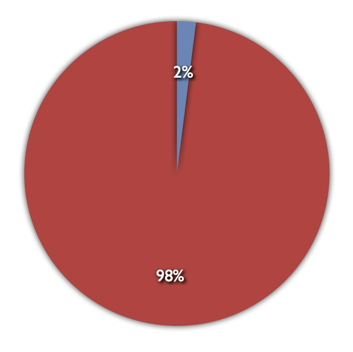
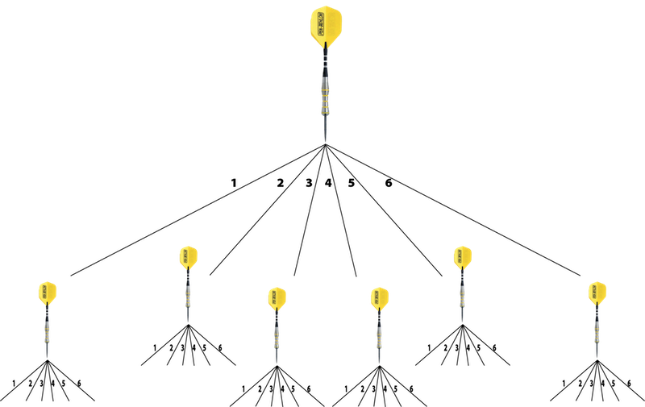

Your browser doesn't support the features required by impress.js, so you are presented with a simplified version of this presentation.
For the best experience please use the latest Chrome, Safari or Firefox browser. Upcoming version 10 of Internet Explorer should also handle it.
DoubleDartDrop
by Isaac Riley-Wasserman
How does it work?
The Game
The game is simple. All you need is an old turntable, styrofoam, PVC piping, and some darts.
The Game
The objective of the game is to score double-fives.
The Game
Preparation
The Game
Create a target divided into 6 equally sized pie sections, numbered 1-6.
The Game
How to play
The Procedure
A "turn" consists of two dart drops.
We will be taking 50 turns to determine the probability of hitting our target number of "5" twice in a single turn.
The Procedure
While the target is spinning release the first dart down the tube and onto the target. Record and repeat.
The Procedure
The data.
The Results
In 50 turns we got double 5's only once, which makes for a ratio of 1:50.
The Results

That's only1:50 or just 2%
The math.
The Numbers
Tree diagram of all possible results from two drops.

With only 36 possible results, double fives should occur 1:36 times.
1:36 = 2.78%
Our data vs. the math.
Rate Table (Tests)
Rate Table (Math)
Comparative Rate Table
Reason Why Tests Don't Match Math
Conclusion
Use a spacebar or arrow keys to navigate